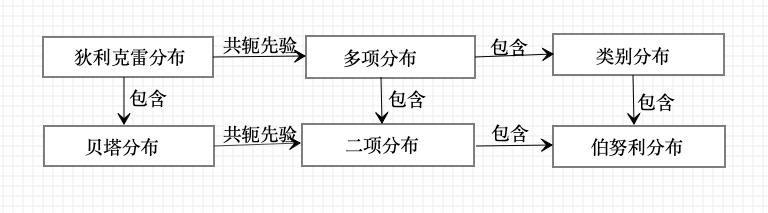
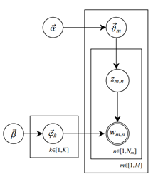

潜在狄利克雷分布(latent Dirichlet allocation,LDA)，作为基于贝叶斯学习的话题模型，是潜在语义分析、概率潜在语义分析的扩展。
LDA模型是文本集合的生成概率模型。假设每个文本由话题的一个多项分布表示，每个话题由单词的一个多项分布表示，特别假设文本的话题分布的先验分布是狄利克雷分布，话题的单词分布的先验分布也是狄利克雷分布。
先验分布的导入使LDA能够更好的应对话题模型学习中的过拟合现象。
LDA的文本集合的生成过程如下：首先，随机生成一个文本的话题分布，之后在该文本的每个位置，依据该文本的话题分布随机生成一个话题，然后在该位置依据该话题的单词分布生成一个单词，直至文本的最后一个位置，生成整个文本。重复以上过程生成所有文本。
LDA模型是含有隐变量的概率图模型。每个话题的单词分布，每个文本的话题分布，文本的每个位置的话题是隐变量；文本的每个位置的单词是观测变量。
LDA模型的学习与推理无法直接求解，通常使用吉布斯抽样和变分EM算法(variational EM algorithm)，前者是蒙特卡罗法，而后者是近似算法。
狄利克雷分布
分布定义
多项分布
多项分布是一种多元离散随机变量的概率分布，是二项分布的扩展。
假设重复进行n次独立随机试验，每次试验可能出现的结果有k种，第i种结果出现的概率为，第i种结果出现的次数为。如果用随机变量表示试验所有可能结果的次数，其中表示第i种结果出现的次数，那么随机变量X服从多项分布。
定义20.1(多项分布) 若多元离散变量的概率质量函数为:
其中，则称随机变量X服从参数为(n,p)的多项分布，记作。
当试验的次数n为1时，多项分布变成类别分布(categorical distribution)。类别分布表示试验可能出现的k种结果的概率。
狄利克雷分布
狄利克雷分布是一种多元连续随机变量概率分布，是贝塔分布(beta distribution)的扩展。在贝叶斯学习中，狄利克雷分布常作为多项式分布的先验分布使用。
定义20.2(狄利克雷分布) 若多元连续随机变量的概率密度函数为：
其中，则称随机变量服从参数为的狄利克雷分布，记作 。
式中是伽马函数，定义为：
具有性质
当s是自然数时，有
由于满足条件
所以狄利克雷分布存在于(k-1)维单纯形上。
令
则狄利克雷分布的密度函数可以写成：
其中，是规范化因子，称为多元贝塔函数(或扩展的贝塔函数)。由密度函数的性质：
得
所以式(20-5)是多元贝塔函数的积分表示。
二项分布和贝塔分布
二项分布是多项分布的特殊情况，贝塔分布是狄利克雷分布的特殊情况。
二项分布是指如下概率分布。X为离散随机变量，取值为m，其概率质量函数为:
其中n和p是参数。
贝塔分布是指如下概率分布，X为连续随机变量，取值范围为[0,1]，其概率密度函数为:
其中，s>0和t>0是参数，是贝塔函数，定义为:
当s,t是自然数时，
当n=1时，二项分布变成伯努利分布或0-1分布。伯努利分布表示试验可能出现的2种结果的概率。
下图给出了几种概率分布的关系：

共轭先验
狄利克雷分布的一些重要性质：
- 狄利克雷分布属于指数分布族；
- 狄利克雷分布是多项分布的共轭先验
贝叶斯学习中常使用共轭分布。如果后验分布与先验分布属于同类，则先验分布与后验分布称为共轭分布(conjugate distribution)，先验分布称为共轭先验(conjugate prior)。
作为先验分布的狄利克雷分布的参数又称为超参数。使用共轭分布的好处是便于从先验分布计算后验分布。
设是由k个元素组成的集合。随机变量X服从上的多项分布，，其中和是参数。参数n为从中重复独立抽取样本的次数，为样本中出现的次数；参数为出现的概率。
将样本数据表示为D，目标是计算在样本数据D给定条件下参数的后验概率。对于给定的样本数据D，似然函数是:
假设随机变量服从狄利克雷分布，其中为参数。则的先验分布为：
根据贝叶斯规则，在给定样本数据D和参数条件下， 的后验概率分布是：
狄利克雷后验分布的参数等于狄利克雷先验分布参数加上多项分布的观测计数。好像试验之前就已经观察到计数，因此也把叫做先验伪计数(prior pseudo-counts)。
潜在狄利克雷分配模型
基本想法
潜在狄利克雷分配是文本集合的生成概率模型。
LDA模型表示文本集合的自动生成过程：
- 首先，基于单词分布的先验分布(狄利克雷分布)生成多个单词分布，即决定多个主题内容；
- 之后，基于话题分布的先验分布(狄利克雷分布)生成多个话题分布，即决定多个文本内容；
- 然后，基于每一话题分布生成话题序列，针对每个话题，基于话题的单词分布生成单词，整体构成一个单词序列，即生成文本。重复这个过程生成所有文本。
下图显示LDA的文本生成过程：
LDA模型是概率图模型，其特点是以狄利克雷分布为多项分布的先验分布，学习就是给定文本集合，通过后验概率分布的估计，推断模型的所有参数。利用LDA进行话题分析，就是对给定文本集合，学习到每个文本的话题分布，以及每个话题的单词分布。
LDA与PLSA的区别：
不同点：
- LDA使用狄利克雷分布作为先验分布，而PLSA不使用先验分布(或者说假设先验分布是均匀分布)，两者对文本生成过程有不同假设。
- 学习过程LDA基于贝叶斯学习，而PLSA基于极大似然估计
相同点：两者都假设话题是单词的多项分布，文本是话题的多项分布。
LDA的优点是，使用先验概率分布，可以防止学习过程中产生的过拟合。
模型定义
模型要素
潜在狄利克雷分配使用三种集合:
- 单词集合，其中是第v个单词，，V是单词的个数。
- 文本集合，其中是第m个文本,m=1,2,…,M，M是文本的个数。文本是一个单词序列，其中是文本的第n个单词，，是文本中单词的个数。
- 话题集合，其中是第k个话题，k=1,2,…,K，K是话题的个数。
每个话题由一个单词的条件概率分布决定，。分布服从多项分布(严格意义上类别分布)，其参数为。
参数服从狄利克雷分布(先验分布)，其超参数为。参数是一个V维向量，其中表示话题生成单词的概率。
所有话题的参数向量构成一个KxV矩阵。超参数也是一个V维向量。
每个文本由一个话题的条件概率分布决定的，。分布服从多项分布(严格意义上类别分布)，其参数为。
参数服从狄利克雷分布(先验分布)，其超参数为。参数是一个K维向量，其中表示文本生成话题的概率。
所有文本的参数向量构成一个MxK矩阵。超参数也是一个K维向量。
每个文本中的每个单词由该文本的话题分布以及所有话题的单词分布决定。
生成过程
LDA文本集合的生成过程如下：
给定单词集合W，文本集合D，话题集合Z，狄利克雷分布的超参数和。
生成话题的单词分布
随机生成K个话题的单词分布。具体过程如下：
按照狄利克雷分布随机生成一个参数向量，，作为话题的单词分布 ，k=1,2,…,K
生成文本的话题分布
随机生成M个文本的话题分布。具体过程如下：
按照狄利克雷分布Dir()随机生成一个参数向量，，作为文本的话题分布，m=1,2,…,M。
生成文本的单词序列
随机生成M个文本的个单词。文本(m=1,2,…,M)的单词的生成过程如下：
- 首先，按照多项分布Mult()随机生成一个话题。
- 然后，按照多项分布Mult()随机生成一个单词。
文本本身是单词序列，对应着隐式的话题序列:。
算法20.1(LDA的文本生成算法)
对于话题：
生成多项分布参数，作为话题的单词分布
对于文本：
生成多项分布参数，作为文本的话题分布。
对于文本的单词
- 生成话题，作为单词对应的话题。
- 生成单词
LDA的文本生成过程中，假定话题个数K给定(通常通过试验给定)，狄利克雷分布的超参数和通常也是事先给定的(在没有其它先验知识情况下,可以假设向量和的所有分量均为1)。这时的文本的话题分布是对称的，话题的单词分布也是对称的。
概率图模型
如下图所示，结点表示随机变量，双边圆是观测变量，单边圆是隐变量；有向边表示概率依存关系；矩形表示重复，矩形内的数字表示重复次数。

上图的LDA板块表示，结点和是模型的超参数，结点表示话题的单词分布的参数，结点表示文本的话题分布的参数，结点表示话题，结点表示单词。
结点指向结点，重复K次，表示根据超参数生成K个话题的单词分布的参数;
结点指向结点，重复M次，表示根据超参数生成M个文本的话题分布的参数；
结点指向结点，重复次，表示根据文本的话题分布生成个话题；
结点指向结点，同时K个结点也指向结点，表示根据话题以及K个话题的单词分布生成单词。
把板块图展开得到以下的有向图表示形式：
随机变量序列的可交换性
一个有限的随机变量序列是可交换的，是指随机变量的联合概率分布对随机变量的排列不变：
这里表示自然数1,2,…,N的任意一个排列。一个无限的随机变量序列是无限可交换的，是指它的任意一个有限子序列都是可交换的。
如果一个随机变量序列是独立同分布的，那么它们是无限可交换的。反之不然。
根据De Finetti定理，任意一个无限可交换的随机变量序列对一个随机参数是条件独立同分布的。即任意一个无限可交换的随机变量序列的i基于一个随机参数Y的条件概率，等于基于这个随机参数Y的各个随机变量的条件概率的乘积：
LDA的假设前提为：文本中的话题对一个随机参数是条件独立同分布的。因此，在参数给定的情况下，文本中的话题的顺序可以忽略。
概率公式
LDA模型整体是由观测变量和隐变量组成的联合概率分布，可以表示为：
其中观测变量表示所有文本中的单词序列，隐变量表示所有文本中的话题序列，隐变量表示所有文本的话题分布的参数，隐变量表示所有话题的单词分布的参数，和是超参数。
- 表示超参数给定的情况下，第k个话题的单词分布的参数的生成概率；
- 表示超参数给定的情况下，第m个文本的话题分布的参数的生成概率；
- 表示第m个文本的话题分布给定的情况下，文本的第n个位置的话题的生成概率；
- ，表示在第m个文本的第n个位置的话题及所有话题的单词分布的参数给定的情况下，第m个文本的第n个位置的单词的生成概率。
第m个文本的联合概率分布可以表示为：
其中，表示该文本中的单词序列，表示该文本的话题序列，表示该文本的话题分布参数。
LDA模型的联合分布含有隐变量，对隐变量进行积分得到边缘分布。
参数给定的情况下，第m个文本的生成概率是：
超参数给定的条件下，第m个文本的生成概率是：
超参数给定的条件下，所有文本的生成概率是
LDA的吉布斯抽样算法
潜在狄利克雷分布的学习(参数估计)是一个复杂的最优化问题，很难精确求解，只能近似求解。
常用的近似求解方法有吉布斯抽样和变分推理。
吉布斯抽样优点是实现简单，缺点是收敛速度慢。
基本想法
给定文本(单词序列)的集合，其中是第m个文本,m=1,2,…,M，M是文本的个数。文本是一个单词序列，其中是文本的第n个单词，，是文本中单词的个数。
超参数已知。目标是要推断：
- 话题序列的集合的后验概率分布，其中是第m个文本的话题序列，；
- 参数，其中是文本的话题分布的参数；
- 参数，其中是话题的单词分布的参数。
也就是说，要对联合概率分布进行估计，其中是观测变量，而是隐变量。
使用吉布斯抽样对多元随机变量x的联合分布进行估计：
为了估计多元随机变量x的联合分布p(x)，吉布斯抽样法选择x的一个分量，固定其它分量，按照其条件概率分布进行随机抽样，依次循环对每一分量执行这个操作，得到联合分布p(x)的一个随机样本，重复这个过程，在燃烧期之后，得到联合概率分p(x)的样本集合。
LDA模型的学习通常采用收缩的吉布斯抽样(collapsed Gibbs sampling)方法。基本想法是，
- 通过对隐变量和积分，得到边缘概率分布，其中是可观测变量，变量是e不可观测的；
- 对后验概率分布进行吉布斯抽样，得到分布的样本集合；
- 利用这个样本集合对参数和进行估计，最终得到LDA模型的所有参数估计。
算法 的主要部分
根据前面的分析，问题转化为对后验概率分布的吉布斯抽样，该分布表示在所有文本的单词序列给定的情况下，所有可能话题序列的条件概率。
抽样分布的表达式
首先，
这里变量已知。联合分布的表达式可进一步分解为：
两个因子可以分开处理。
推导第一个因子的表达式。首先：
其中，是第k个话题生成单词集合第v个单词的概率，是数据中第k个话题生成第v个单词的次数。于是
其中，
第二个因子的表达式可以类似推导。首先：
其中，是第m个文本生成第k个话题的概率，是数据中第m个文本生成第k个话题的次数。于是：
其中。由式(20-23)和式(20-25)得
故由式(20-20)和式(20-26)，得收缩的吉布斯抽样分布的公式：
满条件分布 的表达式
分布的满条件分布可以写成：
这里表示所有文本的单词序列的第i个位置的单词，表示单词对应的话题，i=(m,n)，，表示分布对变量的边缘化因子。
式(20-28)是在所有文本单词序列、其它位置话题序列给定条件下，第i个位置的话题的条件概率分布。由式(20-27)和式(20-28)可以推出：
其中第m个文本的第n个位置的单词是单词集合的第v个单词，其话题是话题 集合的第k个话题，表示第k个话题中第v个单词的计数，但减去当前单词的计数，表示第m个文本中第k个话题的计数，但减去当前单词的话题的计数。
算法的后处理
通过吉布斯抽样得到的分布的a样本，可以得到变量的分配值，也可以估计变量和。
参数估计
参数
根据LDA模型的定义，后验概率满足：
这里是第m个文本的话题计数，表示 分布对变量的边缘化因子。于是得到参数的估计式：
参数
后验概率满足
这里是第k个话题的单词计数,表示分布对变量的边缘化因子，I是文本集合单词序列的单词总数。于是，得到参数的估计式：
算法
算法20.2(LDA吉布斯抽样算法)
输入：文本的单词序列，；
输出：文本的话题序列，的后验概率分布的样本计数，模型的参数和的估计值
参数：超参数 和话题个数K
设所有计数矩阵的元素，计数向量的元素初值为0；
对所有文本，
对第m个文本中的所有单词，n=1,2,…,
抽样话题
增加文本-话题计数,
增加文本-话题和计数，
增加话题-单词计数,
增加话题-单词和计数
循环执行以下操作，直到进入燃烧期
对所有文本
对第m个文本中的所有单词，
当前的单词是第v个单词，话题指派是第k个话题
减少计数
按照满条件分布进行抽样
得到新的第个话题，分配给
增加计数
得到更新的两个计数矩阵和，表示后验概率分布的样本计数
利用得到的样本计数，计算模型参数：
LDA的变分EM算法
变分推理
变分推理(variational inference)是贝叶斯学习中常用的、含有隐变量模型的学习和推理方法。
MCMC通过随机抽样的方法近似的计算模型的后验概率；
变分推理则通过解析的方法计算模型的后验概率的近似值。
变分推理的基本想法：假设模型是联合概率分布p(x,z)，其中x是观测变量，z是隐变量，包括参数。目标是学习模型的后验概率分布p(z|x)，用模型进行概率推理。由于目标分布很复杂，因此通过使用概率分布q(z)近似条件概率分布p(z|x)，用KL散度计算两者的相似度，q(z)称为变分分布(variational distribution)。
如果能找到与p(z|x)在KL散度意义下最近的分布，则可以用这个分布近似。
下图给出了与的关系：
KL散度可以写成以下形式：
KL散度大或等于0，当且仅当两个分布一致时为0，由式(20-35)可推出：
不等式右端是左端的下界，左端称作证据(evidence)，右端称为证据下界(evidence lower bound,ELBO)，证据下界记作：
KL散度(20-35)的最小化可以通过证据下界(20-37)最大化实现，因为目标是求q(z)使KL散度最小化，这时是常量。
因此，变分推理变成求解证据下界最大化的问题。
假设q(z)对z的所有分量都是相互独立的(实际是条件独立于参数)，即满足：
这时，变分分布称为平均场(mean field)。
KL散度的最小化或证据下界最大化实际是在平均场的集合，即满足独立假设的分布集合之中进行的。
变分推理有以下几个步骤：
- 定义变分分布q(z)
- 推导其证据下界表达式
- 用最优化方法对证据下界进行优化，如坐标上升，得到最有分布，作为后验概率分布p(z|x)的近似
变分EM算法
变分推理中，可以通过迭代的方法最大化证据下界，此算法是EM算法的推广，称为变分EM算法。
假设模型是联合概率分布，其中x是观测变量，z是隐变量，是参数。目标是通过观测数据的概率(证据) 的最大化，估计模型的参数。
使用变分推理，导入平均场，定义证据下界：
通过迭代，分别以q和为变量，对证据下界进行最大化。
算法20.3(变分EM算法)
循环执行以下E步和M步，直到收敛。
- E步：固定，求对q的最大化
- M步：固定q，求对的最大化
给出模型参数的估计值。
根据变分推理原理，观测数据的概率和证据下界满足：
变分EM算法的迭代过程中，以下关系成立：
其中上角标t-1和t表示迭代次数。
左边的等式基于E步计算和变分推理原理，中间的不等式基于M步计算，右边的不等式基于变分推理原理。说明了变分EM算法的收敛性。
对照《统计学习方法》9.4节，EM算法的推广，EM算法的推广是求F函数的极大-极大算法，其中的F函数就是证据下界。
EM算法假设q(z) = p(z|x)且p(z|x)容易计算；而变分EM算法则考虑一般情况，使用容易计算的平均场。
当模型复杂时，EM算法未必可用，但变分EM算法仍然可以使用。
算法推导
将变分EM算法应用到下图的LDA模型的学习上。
首先定义具体的变分分布，推导证据下界的表达式，接着，推导变分分布的参数和LDA模型的参数的估计式，最后给出LDA模型的变分EM算法。
证据下界的定义
一次只考虑一个文本。记作
文本的单词序列，对应的话题序列，以及话题分布，随机变量和的联合分布是：
其中，是观测变量，和是隐变量，是参数。
定义基于平均场的变分分布：
其中是狄利克雷分布参数，是多项分布的参数，变量和的各个分量都是条件独立的。目标是求KL散度意义下最相近的变分分布，以近似LDA模型的后验分布。
下图为变分分布的板块表示：
LDA模型中的隐变量之间存在依存关系，变分分布中这些依存关系被去掉，变量条件独立。由此得到一个文本的证据下界：
其中，数学期望是对分布定义的，为了方便写作，是变分分布的参数，是LDA模型参数。
所有文本的证据下界为：
为求解证据下界的最大化，首先写出证据下界的表达式。为此展开证据下界(20-44)：
根据变分参数和，模型参数和$$\varphi$$继续展开，并将展开式的每一项写成一行：
式中是对数伽马函数的导数，即：
第一项推导，求，是关于分布的数学期望。
其中，根据这里的狄利克雷分布的相关性质，可得：
故得：
式中表示第k个话题的狄利克雷分布参数。
第二项推导，求，是关于分布的数学期望。
式中表示文档第n个位置的单词由第k个话题产生的概率，表示第k个话题的狄利克雷分布参数。最后一步请参考这里的狄利克雷分布的相关性质。
第三项推导，求，是关于分布的数学期望。
式中表示文档第n个位置的单词由第k个话题产生的概率，在第n个位置的单词是单词集合的第v个单词时为1，否则取值为0，表示第k个话题生成单词集合中第v个单词的概率。
第四项推导，求，是关于分布的数学期望。
由于，类似于(20-50)，可以得到：
式中表示第k个话题的狄利克雷分布参数。
第五项推导，求，是关于分布的数学期望。
式中表示文档第n个位置的单词由第k个话题产生的概率，表示第k个话题的狄利克雷分布参数。
变分参数估计
参数
首先，通过证据下界最优化估计参数。表示第n个位置的单词是由第k个话题生成的概率。
考虑式(20-47)关于的最大化，满足约束条件。使用拉格朗日乘子法，得：
这里是(在第n个位置)由第k个话题生成第v个单词的概率。
对求偏导数得:
令偏导数为0，得到参数的估计值：
参数
接着，通过证据下界最优化估计参数。是第k个话题的狄利克雷分布参数。
考虑式(20-47)关于得最大化：
简化为：
对求偏导数得：
令偏导数为0，求解得到参数的估计值：
据此 ，得到由坐标上升法估计变分参数的方法，具体算法如下：
算法20.4(LDA的变分参数估计算法)
初始化：对所有k和n，
初始化：对所有k,
重复
对n=1到N
对k=1到K
规范化使其和为1
直到收敛
模型参数的估计
参数
给定一个文本集合，模型参数估计对所有文本同时进行。
首先，通过证据下界的最大化估计。表示第gek话题生成单词集合第v个单词的概率。
将式(20-47)扩展到所有文本，并考虑关于的最大化。满足K个约束条件:
从而得到对应的拉格朗日函数：
求求偏导数并令其为0，归一化求解，得到参数的估计值为：
其中，为第m个文本的第n个单词属于第k个话题的概率， 在第m个文本的第n个单词是单词集合的第v个单词时取值为1，否则为0.
参数
接着，通过证据下界的最大化估计参数。表示第k个话题的狄利克雷分布参数。
将式(20-47)扩展到所有文本，并考虑关于的最大化：
对求偏导数得：
再对求偏导数，得：
这里是delta函数。
式2(0-66)和式(20-67)分别是函数(20-65)对变量的梯度和Hessian矩阵。
应用牛顿法求该函数的最大化。用以下公式迭代，得到参数的估计值。
据此，得到估计参数的算法。
算法总结
根据上面的推导，给出LDA的变分EM算法：
算法20.5(LDA的变分EM算法)
输入：给定文本集合；
输出：变分参数，模型参数。
交替迭代E步和M步，直到收敛。
E步
固定模型参数，通过关于变分参数的证据下界的最大化，估计变分参数。具体见算法20.4
M步
固定变分参数，通过关于模型参数的证据下界的最大化，估计模型参数。具体见式(20-64)和式(20-68)。
根据变分参数()可以估计模型参数，。